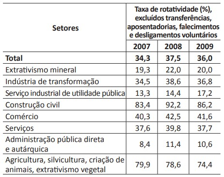

Questão 8/35
Segundo a pesquisa Retratos da Leitura no Brasil, realizada pelo Instituto Pró-Livro, a média anual brasileira de livros lidos por habitante era, em 2011, de 4,0. Em 2007, esse mesmo parâmetro correspondia a 4,7 livros por habitante/ano.
 Disponível em:A tabela acima apresenta a taxa de rotatividade no mercado formal brasileiro, entre 2007 e 2009. Com relação a esse mercado, sabe-se que setores como o da construção civil e o da agricultura têm baixa participação no total de vínculos trabalhistas e que os setores de comércio e serviços concentram a maior parte das ofertas. A taxa média nacional é a taxa média de rotatividade brasileira no período, excluídos transferências, aposentadorias, falecimentos e desligamentos voluntários.
Com base nesses dados, avalie as afirmações seguintes.
- A taxa média nacional é de, aproximadamente, 36%.
- O setor de comércio e o de serviços, cujas taxas de rotatividade estão acima da taxa média nacional, têm ativa importância na taxa de rotatividade, em razão do volume de vínculos trabalhistas por eles estabelecidos.
- As taxas anuais de rotatividade da indústria de transformação são superiores à taxa média nacional.
- A construção civil é o setor que apresenta a maior taxa de rotatividade no mercado formal brasileiro, no período considerado.
É correto apenas o que se afirma em
Fonte: Prova OficialAtenção!
Você tem certeza de que deseja enviar suas resposta e ver seu resultado? Ao confimar não será possível preencher questões deixadas em branco.